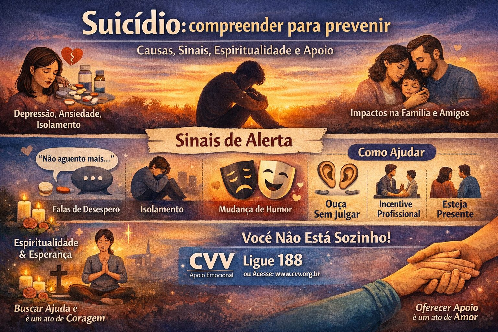

Saúde emocional
Suicídio: compreender para prevenir

O suicídio é um tema delicado, mas essencial de ser discutido com seriedade e empatia. Falar sobre isso não incentiva o ato, ao contrário, abre espaço para compreensão, acolhimento e prevenção. Em um mundo cada vez mais acelerado e exigente, cuidar da saúde mental tornou-se tão importante quanto cuidar do corpo.
O que está por trás do suicídio?
O suicídio raramente tem uma única causa. Geralmente, é resultado de uma combinação de fatores emocionais, psicológicos, sociais e, em alguns casos, biológicos. Entre os principais estão:
- Depressão e ansiedade
- Sentimentos de desesperança ou vazio
- Perdas significativas (afetivas, financeiras ou profissionais)
- Isolamento social
- Uso abusivo de álcool ou drogas
- Histórico de traumas ou violência
- Pressões intensas no trabalho ou na vida pessoal
É importante entender que, para quem está sofrendo, a dor emocional pode parecer insuportável e o suicídio surge, muitas vezes, como uma tentativa de interromper esse sofrimento.
Impactos: quando a dor se espalha
O suicídio não afeta apenas quem sofre diretamente. Seus impactos atingem familiares, amigos, colegas de trabalho e toda a comunidade.
- Sentimento de culpa e impotência em pessoas próximas
- Traumas emocionais duradouros
- Desestruturação familiar
- Consequências sociais e profissionais
Por isso, a prevenção é uma responsabilidade coletiva.
Espiritualidade: um ponto de apoio possível
A espiritualidade, independentemente de religião, pode ser um fator de proteção importante. Ela pode oferecer:
- Sentido de propósito e pertencimento
- Esperança em momentos difíceis
- Espaço para reflexão e acolhimento
- Rede de apoio comunitário
No entanto, é fundamental que a espiritualidade seja acolhedora e não baseada em culpa ou julgamento. O apoio deve ser sempre compassivo.
Sinais de alerta: o que observar
Identificar sinais pode salvar vidas. Alguns comportamentos merecem atenção:
- Falas como “não aguento mais”, “seria melhor desaparecer”
- Isolamento repentino
- Mudanças bruscas de humor
- Desinteresse por atividades antes prazerosas
- Organização de assuntos pessoais como despedida
- Aumento no uso de álcool ou drogas
Nem sempre os sinais são claros, mas qualquer mudança significativa no comportamento deve ser levada a sério.
Como ajudar e prevenir
A prevenção começa com atitudes simples, mas poderosas:
1. Escute sem julgar
Muitas vezes, a pessoa só precisa ser ouvida. Evite minimizar a dor ou dar respostas prontas.
2. Esteja presente
A presença genuína pode fazer diferença. Pequenos gestos mostram que a pessoa não está sozinha.
3. Incentive ajuda profissional
Psicólogos, psiquiatras e terapeutas são fundamentais no processo de cuidado.
4. Fale sobre o tema
Quebrar o tabu é essencial. Conversas abertas salvam vidas.
5. Cuide de você também
Quem ajuda também precisa de suporte emocional.
Onde buscar ajuda: você não precisa enfrentar isso sozinho
No Brasil, existe um serviço gratuito e confidencial disponível 24 horas por dia:
- Centro de Valorização da Vida
📞 Telefone: 188
💻 Chat online: disponível no site oficial do CVV
O CVV oferece escuta acolhedora e sem julgamentos, sendo um importante canal de apoio emocional.
Mensagem final
Falar sobre suicídio é, acima de tudo, falar sobre vida, cuidado e conexão humana. Se você está passando por um momento difícil, saiba que sua dor é válida, mas ela não precisa ser enfrentada sozinho.
E se você conhece alguém que pode estar sofrendo, não ignore. Um gesto de atenção pode ser o começo de uma mudança.
Buscar ajuda é um ato de coragem. Oferecer ajuda é um ato de humanidade.
Referências
- CVV – Centro de Valorização da Vida (ligue 188, 24 horas, gratuito)
- Setembro Amarelo (Associação Brasileira de Psiquiatria)
Precisa conversar agora? Ligue 188 (CVV, gratuito e 24 horas) ou acesse cvv.org.br. Em emergência, ligue 192 (SAMU).
Gostou desta matéria? Veja outras no blog, conheça nossas referências ou fale com a gente.